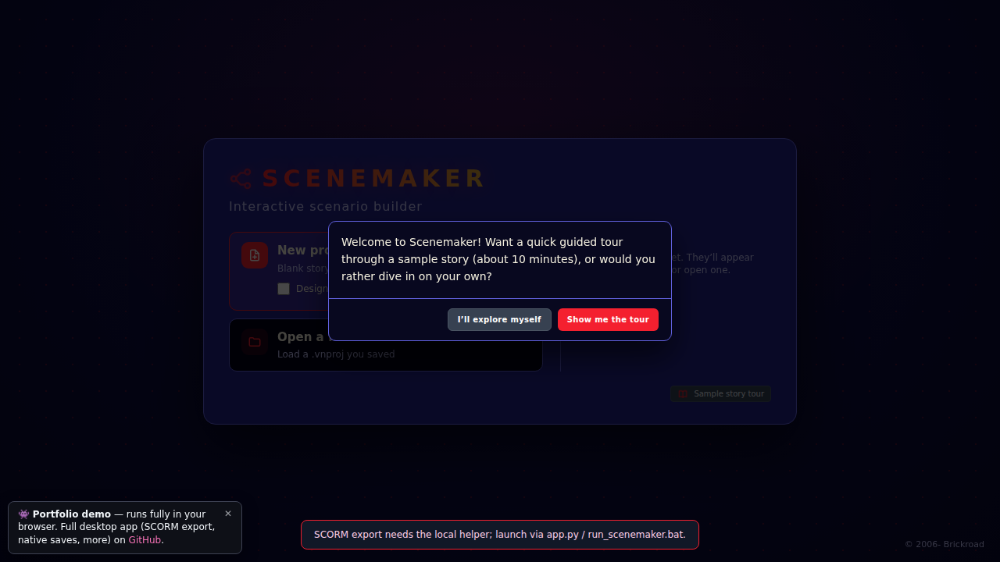

Software · HTML / JavaScript / Python
Scenemaker
Build branching stories. Ship them as SCORM.
Scenemaker is the authoring tool I'm building for branching scenarios and visual novels. You lay out a story as connected scenes on a node graph, wire up choices with variables, conditions, and dice rolls, design the game screen in a drag-and-drop canvas, preview it, and export a SCORM 1.2 package any LMS understands (or a single self-contained web page).
I built it because branching-scenario tools tend to be either expensive subscription suites or bare-bones text tools that can't show what the finished scene will look like. Scenemaker sits in between, and it costs nothing to run: plain HTML and JavaScript, with a small Python standard-library helper on the desktop.
The demo runs entirely in your browser: nothing to install, no account. Saving downloads a project file, exports carry a small "made with the demo" credit, and SCORM export is reserved for the full desktop app.
Want to test the full app? Scenemaker isn't public yet. Contact me and I'll set you up with access.
Play a story made with it
"The Whistleblower" is Scenemaker's built-in sample: seven scenes, branching choices, tracked variables, and three endings, exported as one web page.
Also available as a real SCORM 1.2 package (the kind Scenemaker builds for an LMS).
More examples: one tool, very different stories
Three short modules built with the same editor, each set up to look and play differently. Every one is a single self-contained web page, so it opens anywhere, offline included.
The Group Chat
A school scenario about a rumor: a classmate says you copied their essay, and it is all over the group chat. Decide how to handle it and see how it plays out the next day. Built for the kind of social-skills lesson a counselor or advisory class might use.
Showcases: scores the player never sees (trust with a friend, reputation, and whether you showed proof) that quietly steer the story to one of four endings, a bright comic-book look with round portraits and color-coded names, and endings players can share.
Open The Group Chat on its own page
The Bridge Toll
A short fantasy adventure: a wizard named Theodric gives you one item for the road, then a troll named Grum blocks the only bridge to Fernhollow. Talk, shove, or sneak your way across, or pay the toll, and pick how the night ends.
Showcases: tabletop-style dice checks (a d20 plus the stat your item boosted, against a target number), a choice that stays greyed out until you have the trade goods to pay with, characters whose faces change with their mood, and a storybook look with framed portraits and name tabs.
Open The Bridge Toll on its own page
Front Desk
A customer-service practice scenario: a frustrated customer at closing time, their order cancelled for the third time. Choose what to say and do, decide whether to call in your shift lead, and see whether you calm things down or end up escalating to a manager.
Showcases: Scenemaker Lite, a stripped-down, text-only export a fraction of the size of a full one. It still keeps a hidden “tension” score behind every reply, routes to four graded endings, and includes a scroll-back message log and a sound toggle.
Open Front Desk on its own page
What it does
- Story structure: a node graph where every scene is a draggable box; groups, zoom to fit, and choices with variable requirements, variable changes, dice rolls, and multi-branch routing.
- Game screen: a canvas editor for backgrounds, characters with expressions, dialogue boxes, and layers, plus scene effects, transitions, and sound.
- Export: SCORM 1.2 with scoring and mastery settings, a single self-contained web page, a standalone app, or a printable storyboard.
- Built to teach itself: a searchable help index, a guided tour through a sample story, and mini-tutorials the first time you open each panel.
